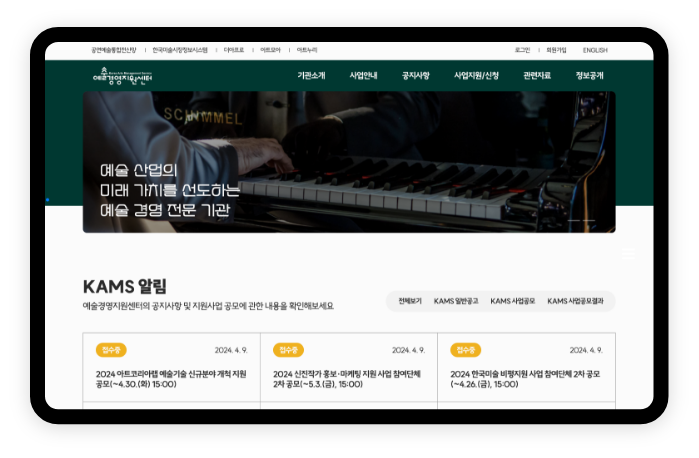

WEB PUBLISHING
PROJECT #03
예술경영지원센터
Korea Art Management Service(KAMS)
바로가기

프로젝트 목적
- 1. 주 이용자들은 문화예술분야의 종사자서 공모사업이나 교육 일정을 보는 것이 주 목적이라는 사실에 중점을 두고 사이트를 구성함
- 2. 로고가 가지고 있는 녹색계열을 적극적으로 활용하여 디자인을 구현
디자인 콘셉트
모티브
- 구인구직 사이트
- 예술경영지원센터는 예술관련 지원을 위한 공모를 진행하고, 관련된 교육 사업을 진행하고 있음,
또한 타기관에서 진행하는 공모사업이나 채용정보를 업로드 하여 관련 정보 취득을 위해서 분야 종사자들이 많이 접속하는 사이트 중 하나임
공지사항이나 문화예술 소식 등의 게시판 내용들을 우선순위로 선정하고 사이트를 구성함
레이아웃
- 카드 뉴스 디자인
- 콘텐츠를 적게 배치하고 여백을 많이 줌으로써 콘텐츠 집중도를 높힐 수 있도록 레이아웃을 구성함 /li>
주요색상
- HEX : #2B2B2B
RGB : 43, 43, 43
- HEX : #003831
RGB : 0, 22, 19
폰트
- Suite
-
- BOLD
- 예술경영지원센터는 미술시장 진흥과 발전을 위해 노력하는 예술경영 전문기관입니다
- Regular
- 예술경영지원센터는 미술시장 진흥과 발전을 위해 노력하는 예술경영 전문기관입니다
- Light
- 예술경영지원센터는 미술시장 진흥과 발전을 위해 노력하는 예술경영 전문기관입니다